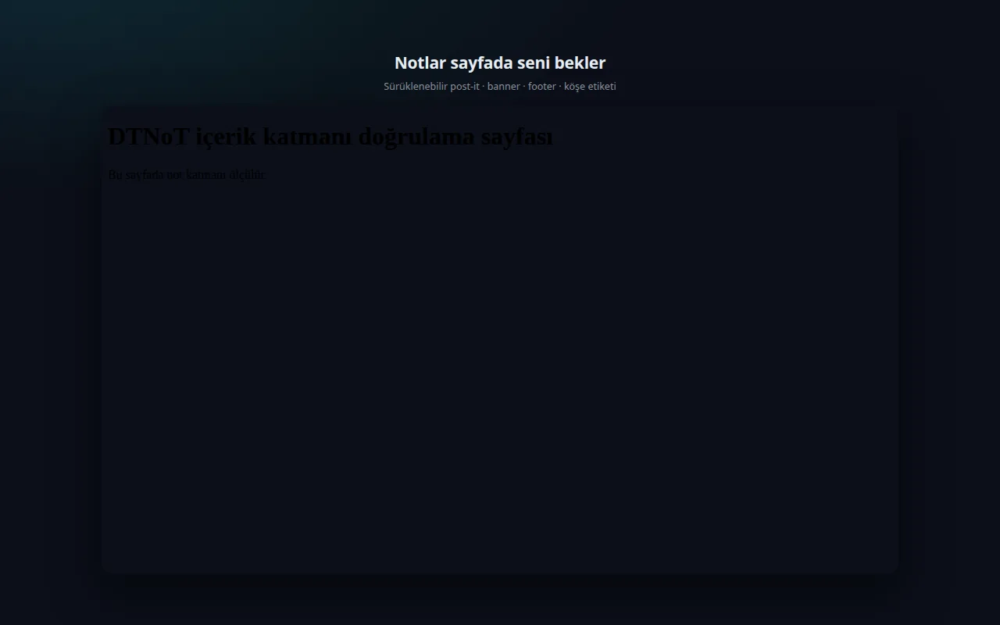

DTNoT_
Gezindiğin sayfalara not bırak. Notun tam bıraktığın yerde seni bekler.
01 Nereden kurulur?
DTNoT şu an Microsoft Edge mağazasında yayında. Mozilla Firefox ve Google Chrome sürümleri incelemede — yayına girdiğinde bu sayfadan duyuracağız.
Ücretsiz · Üyelik yok · Reklam yok · Ağ isteği yok — notlar yalnız senin tarayıcında.
Özellikler
Dört görünüm
Post-it, banner, footer ve köşe etiketi. Hangisi işine yarıyorsa onu seç.
Sayfa başına sınırsız not
İstediğin kadar not bırak; her notun kendi rengi ve yeri var.
Site geneli
Bir notu işaretle; sitenin tüm sayfalarında görünsün.
Yerinde düzenleme
✎ menüsünden metni, rengi ve görünümü değiştir; ya da notu sil.
Sürükle-bırak
Post-it'i sayfada istediğin yere taşı; konum hatırlanır.
Üst üste binmez
Yeni not mevcudun sağına, banner ve footer'da altına, etikette üstüne oturur.
“Notlarım” paneli
Siteye göre gruplu liste, arama, renk filtresi ve sayfayı açma.
Yedekleme
Tüm notlarını JSON olarak indir, başka bir cihazda içe aktar.
Türkçe & İngilizce
Arayüz iki dilde; koyu ve açık tema senin seçimin.
Ekran görüntüleri




02 Nasıl kullanılır?
- 1) Kur. Edge mağazasından “Al” ile eklentiyi tarayıcına ekle.
- 2) İzin ver. Popup'taki “İzin ver” düğmesine bas; sayfa erişimi çalışma zamanında istenir, kurulum geniş izin istemez.
- 3) Not ekle. Popup'tan “Not ekle”: metni yaz, görünüm seç (post-it / banner / footer / etiket), istersen “site geneli” işaretle ve kaydet.
- 4) Düzenle. Sayfadaki notun ✎ menüsünden değiştir veya sil; × ile geçici olarak gizle.
Sık sorulanlar
Notlarım nerede saklanıyor?
Yalnızca senin tarayıcında, kendi cihazında. Sunucuya hiçbir şey gönderilmez.
Üyelik veya hesap gerekiyor mu?
Hayır. Ne hesap ne giriş var; kur ve kullanmaya başla.
Ücretli mi?
Hayır, tamamen ücretsiz. Reklam da göstermez.
Firefox ve Chrome'da var mı?
Firefox (Mozilla) ve Chrome sürümleri incelemede. Yayına girdiklerinde bu sayfadan duyuracağız.
Notlarımı yedekleyebilir miyim?
Evet. Ayarlar bölümünden tüm notlarını JSON olarak indirebilir, başka bir cihazda içe aktarabilirsin.
Aynı notu sitenin tüm sayfalarında gösterebilir miyim?
Evet. Notu “site geneli” olarak işaretle; o sitenin bütün sayfalarında görünür.
İnternet olmadan çalışır mı?
Evet. Eklenti hiç ağ isteği yapmaz; notlar cihazında durur.
Verilerim toplanıyor mu?
Hayır. Hiçbir veri toplanmaz, saklanmaz, satılmaz veya iletilmez.
DTNoT hesap açmaz, sunucuya bağlanmaz, reklam göstermez. Notların tarayıcı deposunda tutulur; tarayıcı verilerini temizlersen notlar da silinir — düzenli olarak JSON yedeği almak iyi bir alışkanlıktır. Veri işleme yaklaşımı için gizlilik politikasına bakabilirsin.